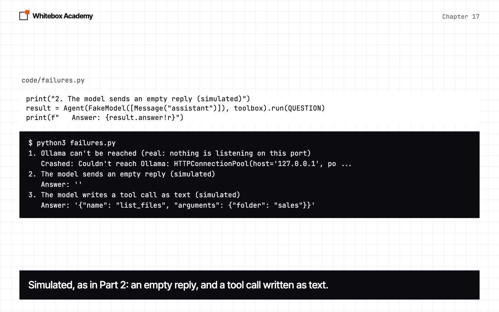
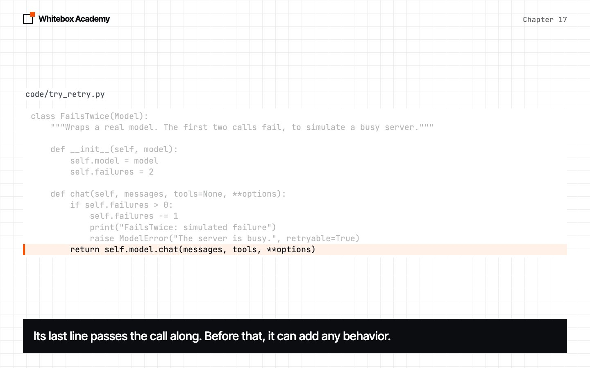
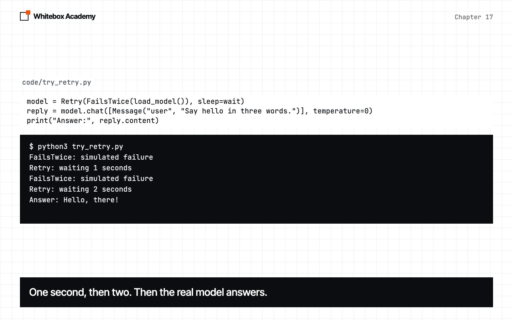
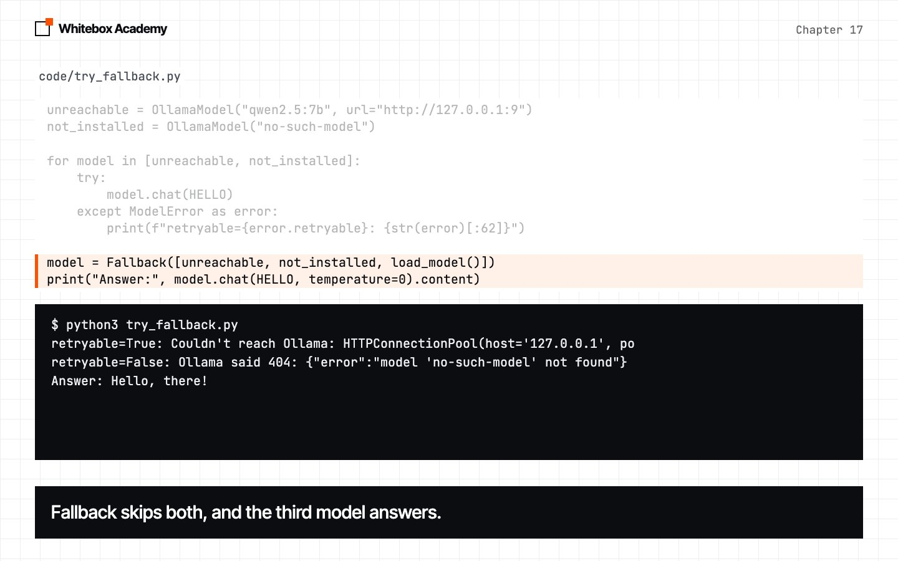
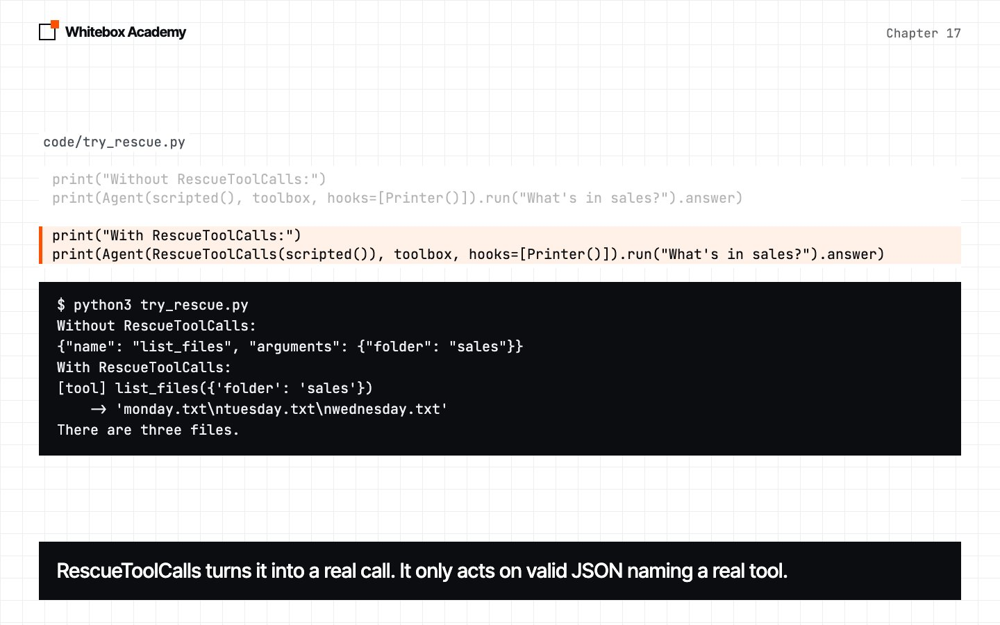
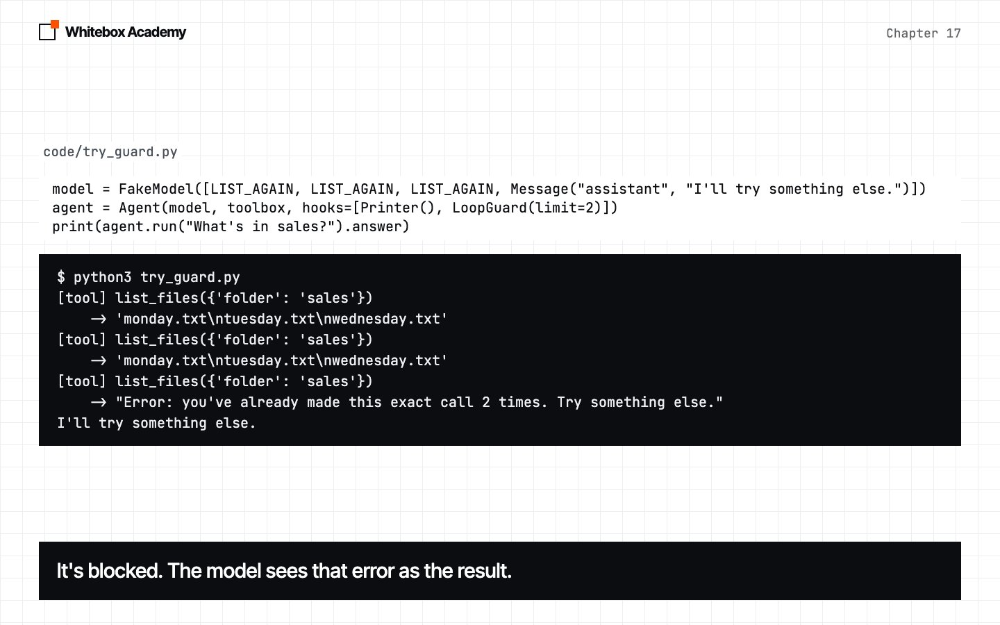
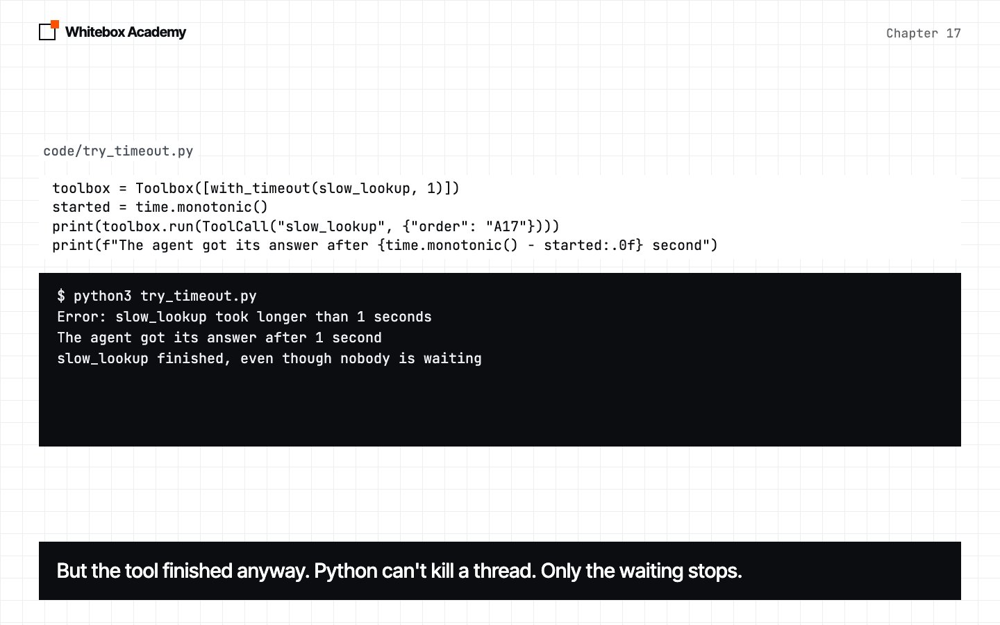
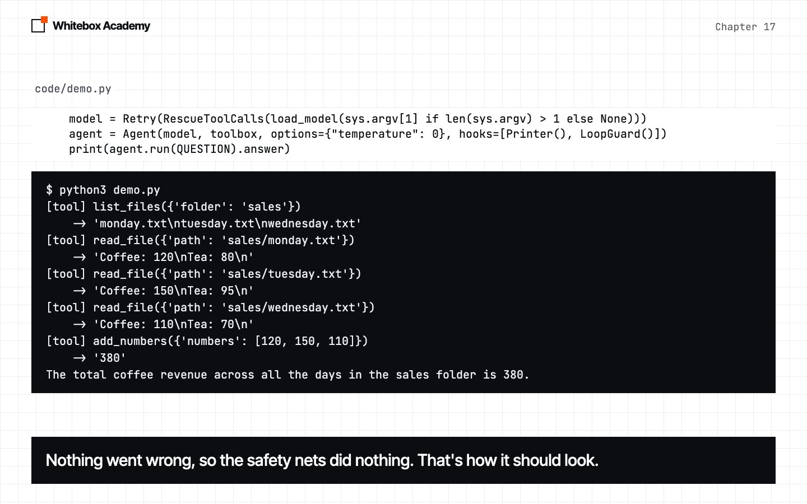

Reliability
Wrap one model in another, so your agent survives the failures you’ve already seen, and learn which ones it still can’t survive.
Seeing a failure doesn’t stop it
In chapter 16, you learned to see inside a run. Part 2 gave us a list of real failures: a server that wasn’t running, an empty reply, a tool call written as plain text, a loop that kept repeating itself. This chapter adds one idea that handles most of them: a model that wraps another model.
Start Ollama, activate the .venv from chapter 05, and work in chapters/17-reliability/code. New in the framework are whitebox/reliability.py and a ModelError class in whitebox/models.py. The files that start with try_, plus failures.py and still_wrong.py, are provided. To check the framework itself, run python3 -m pytest tests from code.
Break it
failures.py runs an agent with no safety nets, and sets up five failures. Most failures are rare and can’t be produced on demand, so only the first is real. It points at a port where nothing is listening. The others use FakeModel, or a tool that sleeps, to act out what we saw in Part 2.
Predict: which of the five will crash the program? Which will carry on, as if nothing went wrong?
$ python3 failures.py
1. Ollama can't be reached (real: nothing is listening on this port)
Crashed: Couldn't reach Ollama: HTTPConnectionPool(host='127.0.0.1', po ...
2. The model sends an empty reply (simulated)
Answer: ''
3. The model writes a tool call as text (simulated)
Answer: '{"name": "list_files", "arguments": {"folder": "sales"}}'
4. The model repeats the same call (simulated)
Answer: 'Stopped: no answer after 8 steps.'
5. A tool hangs (simulated: it only sleeps for 3 seconds)
The agent sat waiting for 3 seconds
Only the first one crashed. That’s the easy case, because at least you find out. Failures 2 and 3 are worse: the agent hands back an empty answer, or a line of JSON, and reports nothing wrong.
ModelError
A failed call used to raise whatever requests raised, and that’s an Ollama detail. So models.py now has its own error. To make your own exception, write a class that inherits from Exception. super().__init__(message) calls the parent class’s __init__, so the message works as usual.
class ModelError(Exception):
"""A model call failed. retryable says whether trying again could help."""
def __init__(self, message, retryable=False):
super().__init__(message)
self.retryable = retryable
OllamaModel turns every failure into a ModelError. raise ... from error keeps the original error attached, so a traceback shows both.
def post(self, body, stream):
"""Send a request, and turn any failure into a ModelError."""
try:
response = requests.post(f"{self.url}/api/chat", json=body, timeout=180, stream=stream)
except requests.RequestException as error:
raise ModelError(f"Couldn't reach Ollama: {error}", retryable=True) from error
if not response.ok:
retryable = response.status_code >= 500
raise ModelError(f"Ollama said {response.status_code}: {response.text}", retryable)
return response
Status codes of 500 and above mean the server had a problem, and it might pass. Codes below that mean the request was wrong, and sending it again will fail again.
A stream can also fail after it has started, if the connection drops partway through a reply. So from this chapter on, the loop in OllamaModel.stream sits inside the same kind of try, and a lost connection raises a retryable ModelError too. It’s the only change to chapter 15’s stream.
A model that wraps a model
FailsTwice, in try_retry.py, is a Model, and it holds a Model. Its last line passes the call along unchanged. Everything before that line is free to add behavior. Code that uses it can’t tell the difference.
class FailsTwice(Model):
"""Wraps a real model. The first two calls fail, to simulate a busy server."""
def __init__(self, model):
self.model = model
self.failures = 2
def chat(self, messages, tools=None, **options):
if self.failures > 0:
self.failures -= 1
print("FailsTwice: simulated failure")
raise ModelError("The server is busy.", retryable=True)
return self.model.chat(messages, tools, **options)
That’s a wrapper. Retry is a wrapper too, so it can go around FailsTwice. wait is a small function in the script that prints a line, then sleeps.
model = Retry(FailsTwice(load_model()), sleep=wait)
reply = model.chat([Message("user", "Say hello in three words.")], temperature=0)
Predict: Retry tries three times. How long will it wait between tries?
$ python3 try_retry.py
FailsTwice: simulated failure
Retry: waiting 1 seconds
FailsTwice: simulated failure
Retry: waiting 2 seconds
Answer: Hello, there!
The failures are simulated, and the answer comes from qwen2.5:7b.
class Retry(Model):
"""Wrap a model. Try again after a temporary failure, waiting longer each time."""
def __init__(self, model, attempts=3, delay=1, sleep=time.sleep):
self.model = model
self.attempts = attempts
self.delay = delay
self.sleep = sleep
def wait_or_raise(self, error, attempt):
if not error.retryable or attempt == self.attempts:
raise error
self.sleep(self.delay * 2 ** (attempt - 1))
def chat(self, messages, tools=None, **options):
for attempt in range(1, self.attempts + 1):
try:
return check_not_empty(self.model.chat(messages, tools, **options))
except ModelError as error:
self.wait_or_raise(error, attempt)
- Exponential backoff:
self.delay * 2 ** (attempt - 1)doubles the wait each time: 1, 2, 4. A struggling server needs room to recover. wait_or_raisegives up at once on a permanent error, and after the last attempt.sleepis a parameter, so a test can pass a fake one and not really wait.check_not_emptyraises a retryableModelErrorwhen a reply has no text and no tool calls.
Retrying can’t always help. If all three attempts fail, Retry raises the error, and your program still has to deal with it. At temperature 0 the model tends to repeat itself, so a second try may well send back the same empty reply.
Streaming needs its own version
Agent always calls model.stream, so every wrapper needs stream as well as chat. Once a piece of text has reached the screen, you can’t take it back, so Retry only retries a stream that hasn’t started. isinstance(piece, Message) asks whether piece is a Message, which is how chapter 15’s stream marks the finished reply.
def stream(self, messages, tools=None, **options):
for attempt in range(1, self.attempts + 1):
started = False
try:
for piece in self.model.stream(messages, tools, **options):
if isinstance(piece, Message):
check_not_empty(piece)
started = True
yield piece
return
except ModelError as error:
if started: # The reader has seen part of a reply, so we can't start over.
raise
self.wait_or_raise(error, attempt)
Fallback: use another model
Retry tries the same model again. Fallback moves on to the next one. Both failures in try_fallback.py are real: one model points at a dead port, and the other isn’t installed.
unreachable = OllamaModel("qwen2.5:7b", url="http://127.0.0.1:9")
not_installed = OllamaModel("no-such-model")
for model in [unreachable, not_installed]:
try:
model.chat(HELLO)
except ModelError as error:
print(f"retryable={error.retryable}: {str(error)[:62]}")
model = Fallback([unreachable, not_installed, load_model()])
print("Answer:", model.chat(HELLO, temperature=0).content)
Predict: which of the two errors is worth retrying?
$ python3 try_fallback.py
retryable=True: Couldn't reach Ollama: HTTPConnectionPool(host='127.0.0.1', po
retryable=False: Ollama said 404: {"error":"model 'no-such-model' not found"}
Answer: Hello, there!
A dead connection might come back. A model that isn’t installed won’t, however long you wait. Fallback skips past both, because any working model will do.
class Fallback(Model):
"""Try each model in turn until one works."""
def __init__(self, models):
self.models = models
def chat(self, messages, tools=None, **options):
for model in self.models[:-1]:
try:
return model.chat(messages, tools, **options)
except ModelError:
pass
return self.models[-1].chat(messages, tools, **options)
The last model is outside the try, so if every model fails, you get the last one’s error. stream follows the same pattern, and ends with yield from, which yields every item of another generator. Wrappers combine: Fallback([Retry(first), Retry(second)]) retries each one before moving on. Your backup might be a weaker model, so a fallback can change the quality of the answers.
RescueToolCalls: a tool call written as text
In chapter 11, you saw that a tool call really is text. When Ollama doesn’t spot it, the text stays in the reply, and our loop takes it as the final answer. That happened once to qwen2.5:14b in chapter 12.
def rescue(reply, tools):
"""If a model wrote a tool call as plain text, turn it into a real one."""
if reply.tool_calls or not reply.content:
return reply
text = reply.content.replace("<tool_call>", "").replace("</tool_call>", "").strip()
try:
data = json.loads(text)
except json.JSONDecodeError:
return reply
names = [tool.name for tool in tools or []]
if not isinstance(data, dict) or data.get("name") not in names:
return reply
return replace(reply, content="", tool_calls=[ToolCall(data["name"], data.get("arguments", {}))])
Every check that fails returns the reply unchanged. It only acts when the whole reply is valid JSON, with the name of a real tool. replace comes from dataclasses: it makes a copy of a dataclass with some fields changed.
In try_rescue.py, the model’s replies are scripted, because we can’t make this failure happen on demand. The tool it calls is real.
print("Without RescueToolCalls:")
print(Agent(scripted(), toolbox, hooks=[Printer()]).run("What's in sales?").answer)
print("With RescueToolCalls:")
print(Agent(RescueToolCalls(scripted()), toolbox, hooks=[Printer()]).run("What's in sales?").answer)
$ python3 try_rescue.py
Without RescueToolCalls:
{"name": "list_files", "arguments": {"folder": "sales"}}
With RescueToolCalls:
[tool] list_files({'folder': 'sales'})
-> 'monday.txt\ntuesday.txt\nwednesday.txt'
There are three files.
rescue gives up if there are any words around the JSON. You’ll fix that in the exercises.
LoopGuard: stop repeating
A repeated call is a problem with the run, not the connection, so this one is a hook from chapter 16. json.dumps turns the arguments into a string, because a dictionary can’t be a dictionary key, and sort_keys=True makes the order of the keys not matter.
class LoopGuard(Hook):
"""Block a tool call that exactly repeats earlier calls in the same run."""
def __init__(self, limit=2):
self.limit = limit
self.counts = {}
def before_tool(self, call):
key = (call.name, json.dumps(call.arguments, sort_keys=True))
self.counts[key] = self.counts.get(key, 0) + 1
if self.counts[key] > self.limit:
return f"Error: you've already made this exact call {self.limit} times. Try something else."
return None
def on_finish(self, result):
self.counts = {}
Predict: with limit=2, what happens on the third identical call? The model is scripted again, and the tool is real.
$ python3 try_guard.py
[tool] list_files({'folder': 'sales'})
-> 'monday.txt\ntuesday.txt\nwednesday.txt'
[tool] list_files({'folder': 'sales'})
-> 'monday.txt\ntuesday.txt\nwednesday.txt'
[tool] list_files({'folder': 'sales'})
-> "Error: you've already made this exact call 2 times. Try something else."
I'll try something else.
To be honest about this one: we couldn’t make qwen2.5:7b do it. We gave it a tool that always said to ask again, including a version with a firm system prompt, and it stopped after one call in all 17 runs. The real repeats we’ve seen came from chapter 12’s forgetful agent. max_steps already stops a loop like that. LoopGuard is cheap insurance: it stops earlier, and it gives the model a reason to change course. Whether the model listens is up to the model.
with_timeout: a tool that hangs
Every call to requests has a timeout. Your tools don’t. A thread runs code alongside your main program. pool.submit starts the tool on a separate thread and hands back a future, a promise of a result. future.result(timeout=seconds) waits, but only for that long. from None hides the inner error, so a traceback shows only our message.
def with_timeout(tool, seconds):
"""Return a copy of a tool that gives up after some seconds."""
def limited(*args, **kwargs):
pool = ThreadPoolExecutor(max_workers=1)
future = pool.submit(tool.function, *args, **kwargs)
try:
return future.result(timeout=seconds)
except FutureTimeout:
raise TimeoutError(f"{tool.name} took longer than {seconds} seconds") from None
finally:
pool.shutdown(wait=False)
return replace(tool, function=limited)
slow_lookup takes 3 seconds, and the limit is 1. Predict: it prints a line when it finishes. Will that line appear?
toolbox = Toolbox([with_timeout(slow_lookup, 1)])
started = time.monotonic()
print(toolbox.run(ToolCall("slow_lookup", {"order": "A17"})))
print(f"The agent got its answer after {time.monotonic() - started:.0f} second")
$ python3 try_timeout.py
Error: slow_lookup took longer than 1 seconds
The agent got its answer after 1 second
slow_lookup finished, even though nobody is waiting
It did appear, and that’s the catch. Python can’t kill a thread, so with_timeout stops waiting, but the tool carries on. In our run, the program didn’t exit until the tool finished, about 3 seconds in. A tool that sends an email will still send it, even after the agent has been told it failed.
Stack them
Each wrapper is a Model, so they stack. Read them from the inside out: load_model makes the real model, RescueToolCalls repairs what comes back, and Retry retries the whole thing. Agent didn’t change at all.
model = Retry(RescueToolCalls(load_model(sys.argv[1] if len(sys.argv) > 1 else None)))
agent = Agent(model, toolbox, options={"temperature": 0}, hooks=[Printer(), LoopGuard()])
print(agent.run(QUESTION).answer)
$ python3 demo.py
[tool] list_files({'folder': 'sales'})
-> 'monday.txt\ntuesday.txt\nwednesday.txt'
[tool] read_file({'path': 'sales/monday.txt'})
-> 'Coffee: 120\nTea: 80\n'
[tool] read_file({'path': 'sales/tuesday.txt'})
-> 'Coffee: 150\nTea: 95\n'
[tool] read_file({'path': 'sales/wednesday.txt'})
-> 'Coffee: 110\nTea: 70\n'
[tool] add_numbers({'numbers': [120, 150, 110]})
-> '380'
The total coffee revenue across all the days in the sales folder is 380.
Nothing went wrong, so the safety nets did nothing. That’s how it should look.
-
Break it
Five failures with no safety nets. Only one of them crashes.

-
Wrap it
A wrapper is a Model that holds a Model, and passes the call along.

-
Retry
Wait 1 second, then 2, then get the answer.

-
Fall back
A dead port and a missing model, then a working one.

-
Rescue
A tool call written as text becomes a real one.

-
Guard
The third identical call is blocked.

-
Time out
The agent moves on, but the tool keeps running.

-
Stack
Wrappers go around each other, and Agent doesn’t change.

What none of these fix
Every failure so far has been one your code can detect. still_wrong.py turns on every safety net, and asks a harder question five times, at temperature 0.7: how much more was made from coffee than from tea? Coffee made 380 and tea made 245, so the right answer is 135.
for run in range(1, 6):
result = agent.run(QUESTION)
results = [message.content for message in result.messages if message.role == "tool"]
errors = sum(text.startswith("Error: ") for text in results)
right += "135" in result.answer
numbers = re.findall(r"\d+", result.answer) or ["none"]
print(f"Run {run}: {errors} tool errors. The last number in the answer: {numbers[-1]}")
print(f"Reached 135: {right}/5")
re.findall picks the numbers out of the answer, so we can see the last one. You don’t need to know how it works. Predict: how many of the five runs will reach 135? When one misses, how many tool errors will it show?
$ python3 still_wrong.py
Run 1: 0 tool errors. The last number in the answer: 135
Run 2: 0 tool errors. The last number in the answer: 135
Run 3: 0 tool errors. The last number in the answer: 625
Run 4: 0 tool errors. The last number in the answer: 135
Run 5: 0 tool errors. The last number in the answer: 135
Reached 135: 4/5
Run 3 said 625. That’s the total revenue, which answers a different question. Every tool worked, nothing crashed, and no safety net had anything to catch. The reply was a well-formed, confident answer, and it was wrong.
Your score will vary. We ran this batch five times and got 3/5, 5/5, 5/5, 4/5 and 4/5, which is 21 of 25. The misses included 370 and 125 as well as 625, and one run reported the tea total as 255. One more miss ended with the number 8, which is most likely the step limit.
Retries, fallbacks and guards all deal with a run that fails. They can’t judge a run that succeeds. For that, you need to know the right answer in advance, and to check many runs against it. That’s the next chapter.
Which net catches what
| Failure | What handles it | What it can’t do |
|---|---|---|
| Server unreachable or busy | Retry | Help if the outage outlasts the attempts |
| Model missing, or provider down | Fallback | Promise the backup is as good |
| Empty reply | Retry | Help if the model keeps sending the same reply |
| Tool call written as text | RescueToolCalls | Rescue a call with words around it (yet) |
| Repeated calls | LoopGuard | Make the model change course |
| A tool hangs | with_timeout | Stop the tool itself |
| A confident wrong answer | Nothing here |
These are real errors
| What happened | What you see | The fix |
|---|---|---|
| Ollama isn’t running | ModelError: Couldn't reach Ollama: ... | Start Ollama |
| The model isn’t installed | ModelError: Ollama said 404: {"error":"model 'no-such-model' not found"} | Check the name with ollama list, then ollama pull it |
A wrapper has self.model but no chat | NotImplementedError | Write chat. Model’s own version raises this |
Exercises
Open exercises.py and complete the five TODOs. Each one adds something new to the framework:
CountingModel: write your own wrapper, which counts calls.CappedRetry: subclassRetry, so that waits never pass a limit.rescue_with_words: rescue a tool call with words around it.ToolBudget: write a hook that limits tool calls in a run.safe_agent: stack the safety nets.
Then run python3 -m pytest test_exercises.py from chapters/17-reliability. A provided file, conftest.py, lets the exercises find whitebox inside code/. These checks use fake models, so Ollama doesn’t need to be running. You’ve finished when you see 5 passed.
Common mistakes
- Retrying everything. A 404 will never succeed, so retrying only adds delay. Check
retryable. - Retrying a tool that changes something.
Retryis safe here because it wraps a model call. If a tool sends an email, running it twice sends two. - Forgetting
streamin a wrapper.Model.streamfalls back tochat, so your wrapper still works, but the agent loses streaming. - Trusting a timeout to stop a tool. It stops the wait, and the tool keeps running.
- Believing a clean run. No errors doesn’t mean the answer is right.
What you opened
- A wrapper is a
Modelthat holds aModel, so nothing else has to change. ModelErrorsays whether trying again could help.Retrywaits longer each time, and never restarts a reply that’s already showing.Fallback,RescueToolCalls,LoopGuardandwith_timeouteach handle one known failure.- None of them can tell you that a confident answer is wrong.
A wrapper with the same shape as the thing it wraps is known as the decorator pattern. To learn more about retries, read Amazon’s Timeouts, retries, and backoff with jitter.